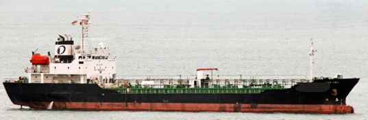

4,317 DWT 3,378 GRT Asphalt Carrier Blt 2006 Jp
/ informed by BNC SHIPBROKING CO., LTD.
(18-618)

- BUILT : JUN. 14, 2006, KURINOURA DOCKYARD CO LTD., JAPAN
- FLAG/CLASS : SINGAPORE / NK
- LOA/LBP/B/D : 99.70 / 93.50 / 15.60 / 7.50 M
- DWT/draft : 4,317 T / 5.6 M
- GRT/NRT : 3,378 / 1,014 T
- MAIN ENGINE : AKASAKA 2,427 KW X 1set
- AUX ENGINE : YANMAR 265 KW X 1,200 RPM X 2set
- SPEED : 13.5 kt
- FO TYPE/CONSUMPTION : MFO180CST 7 T/D FOR M/E, MDO 0.7 T/D FOR G/E
- CARGO TANK CAPACITY : 3,527 m³
- CARGO PUMP CAPACITY: 270 m³/hr X 1set
- OTHER TANK CAPACITY: FO 195, DO 76, FW 136, WB 1,138 m³
- CRANE : 0.9 T X 1set
- CREW COMPLEMENT : 20 P
- HULL/BOTTOM : DOUBLE / DOUBLE
- LAST/NEXT SS : JUNE 18, 2016 / JUNE 13, 2021
- LAST/NEXT DD : SEPT. 13, 2018 / JUNE 17, 2019
- LOCATION : S. E. ASIA
- DELIVERY : WITHIN 2018 AT A SAFE PORT IN S.E. ASIA
Information History
- 180809 : She is available for sale.